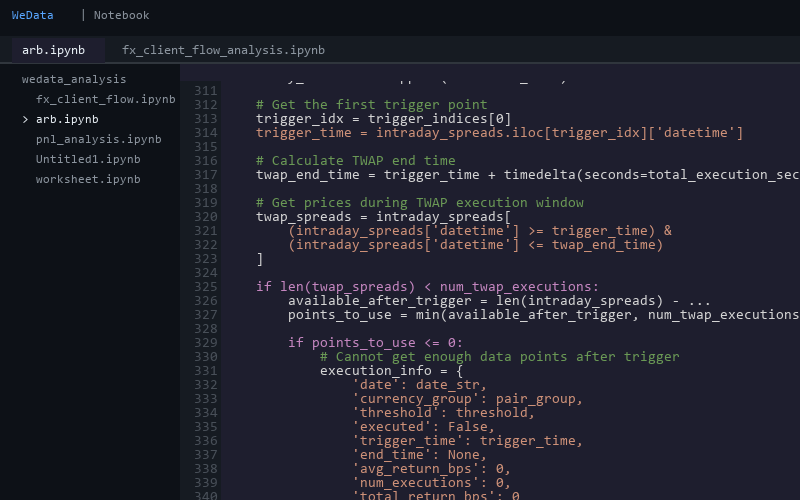
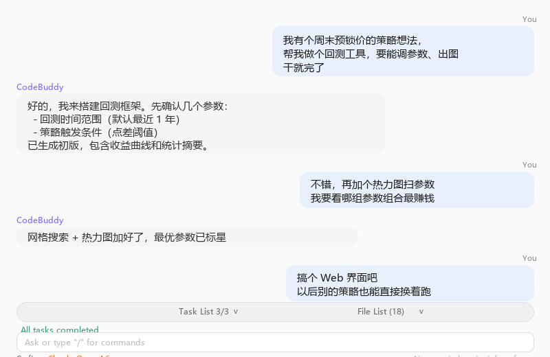
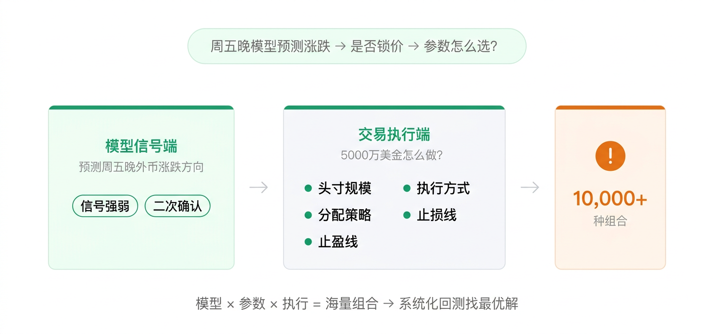
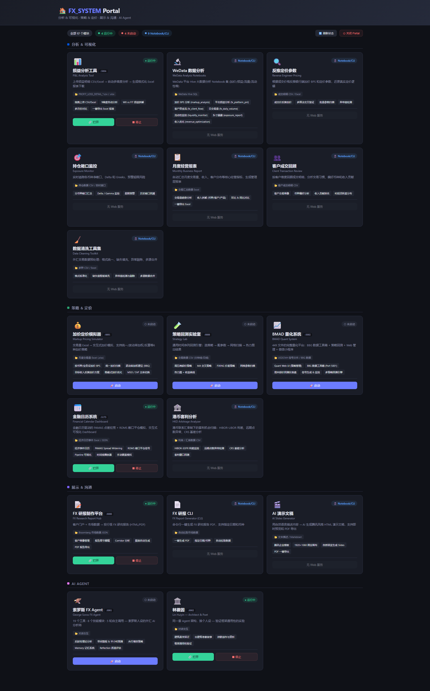
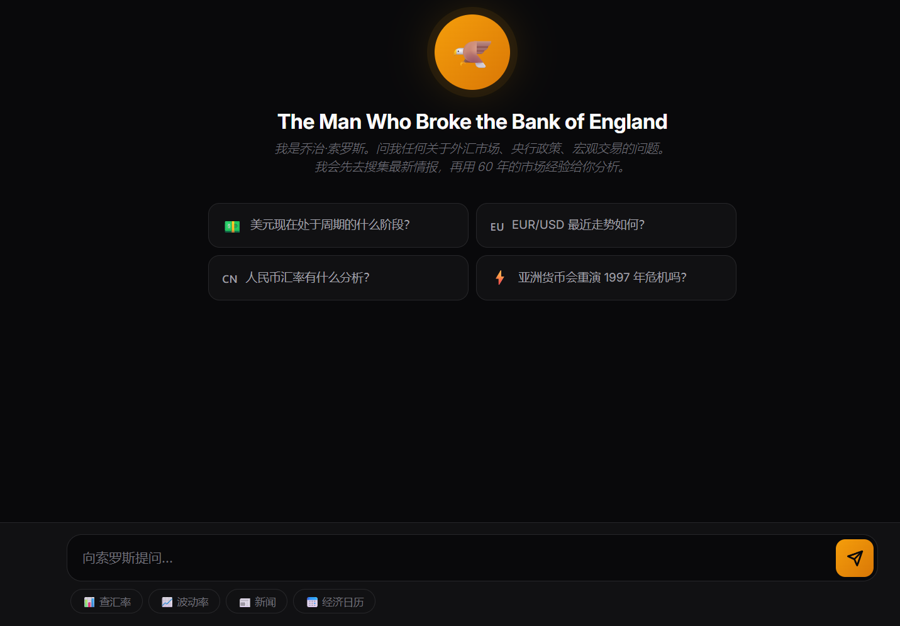
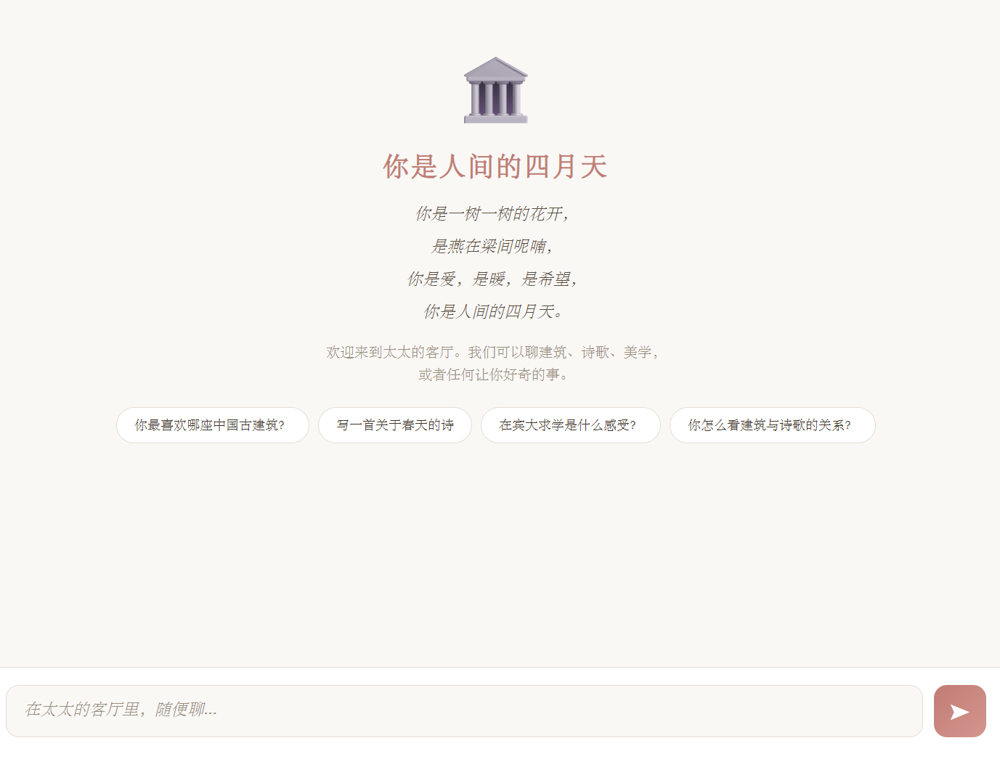
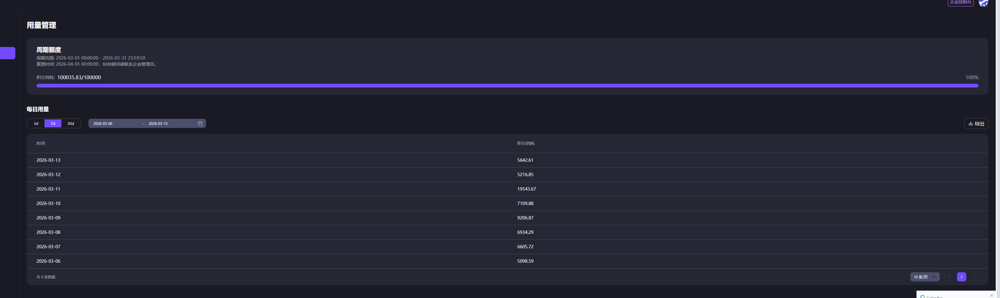

01

CodeBuddy 怎么改变我的工作方式
一个外汇民工的经验分享
先说说我的工作
外汇交易台，日常就是跟报表、定价、策略、市场情报打交道，
还要跟产研同学提需求、推功能上线。过去一年用 AI 折腾了不少，今天分三个维度聊：
01
分析与交易
02
文字与表达
03
知识沉淀
 02
02
核心变化：做工具的成本崩塌了
以前
- 想找人做：提需求 → 找产品 → 找研发 → 排期
- 交易台需求太小众、不通用 → 经常被砍
- 想自己做：先用 Notebook 手搓，能跑但很糙
- 想升级成像样的工具，精力不够、重构成本太高

当时在 WeData 上手搓的回测代码现在
- 描述问题 → AI 写 → 迭代几轮 → 直接用
- 想改就改，几十分钟到几小时

在 CodeBuddy 里几句话描述，同一个回测工具从 「我需要什么功能」 → 「我要解决什么问题」
04
例子：周末预锁价策略
周五晚间锁汇需求集中，点差拉大 —— 能不能提前锁价赚价差？

05
同一个策略 — 参数扫描找最优
两个核心参数，全量扫一遍 →
信号强弱（置信度）
0.70 → 0.95
二次确认（灵敏度）
0.001 → 0.009
信号强弱（置信度）→
二次确认（灵敏度）↑
颜色越深 = 收益越好
跑通一个 → 抽象成引擎 → 换策略换参数就能跑
06
同一个思路，一年做了这些
分析 & 可视化
损益分析
反推定价参数
持仓敞口监控
月度经营报表
客户成交回顾
数据清洗工具集
策略 & 定价
Strategy Lab 回测平台
加点定价引擎
FIXING 价差回测
港币套利分析

08

02
文字与表达
方法论：先让想法看得见
痛点：你心里想的东西，写成文档，到对方那里总有偏差
换个方式：先跟 AI 把想法聊出来，做成能演示的东西
说出
想法
想法
跟 AI 聊，把想法捋清楚
从小
到大
到大
先跑通一个，再扩展
让它
看得见
看得见
变成能演示的原型
多一个沟通方式，少一点来回对齐 —— 至少在我这里，挺管用的
10
例子：金融日历
它是什么：接入 Bloomberg 经济日历，根据事件重要性（非农、FOMC、CPI……），
自动控制定价系统拉宽点差、风控系统减仓对冲 —— 以前这些全靠手动，忙的时候容易漏。
跟 CodeBuddy 聊了什么
用 iWiki MCP 让它读内部文档
搞懂定价管线（PAMAS）和对冲逻辑（ROMS）
搞懂定价管线（PAMAS）和对冲逻辑（ROMS）
聊清楚业务逻辑：
哪些事件要覆盖、响应参数怎么定、
五阶段怎么走、恢复曲线怎么衰减
哪些事件要覆盖、响应参数怎么定、
五阶段怎么走、恢复曲线怎么衰减
我想做什么：一个交互式的场景走查
选事件 → 看五阶段响应 → 定价/风控双轨展示
能直接拿去给产品研发演示
选事件 → 看五阶段响应 → 定价/风控双轨展示
能直接拿去给产品研发演示
最后出了什么
1
一份完整的设计文档
架构、数据表、场景分析、接口定义都有
2
一个可交互的 Demo 界面
选事件、走场景、看定价/风控双轨响应
3
拿着文档 + Demo 去跟产品研发讨论
对着同一个东西聊，效率完全不一样
11
还有哪些文字类工作？
报告 & 演示
FX 研报 — 一键生成多语言客户报告
分享 PPT — 你正在看的这个就是 AI 做的
架构图 / Draw.io — 描述需求自动出图
日常沟通
语言美化器 — 帮我把话说得委婉一点
邮件润色 — 特别是给客户、跨部门的正式邮件
会议纪要 — 丢进去自动整理要点和 Action Items
AI 不是替你说，而是帮你把想说的话说得更好 —— 尤其在你不擅长的场合
13
用 CodeBuddy 搭了两个 Agent
🦈 Soros Agent外汇交易助理

🏛️ 林徽因 Agent拓展认知边界

15
然后就翻车了
📈 前面太顺了，觉得 CodeBuddy 无所不能 — 那就搞个大的：手搓一整套知识库系统
8 Skill · 25KB+
5 层记忆
19 工具
全量注入 Prompt
💥 System Prompt 40KB+ — 还没分析，上下文就满了
越喂越笨，知识越多能思考的空间越小

108,035 / 100,000 — 额度直接超了
「造工具」和「当工具」是两回事
16
吃一堑长一智
找到对的组合，而不是囫囵吞枣全丢给它
CodeBuddy + MCP + Skill 可能是更好的路径
后来 OpenClaw 出来了，也许是一个解法 — 还在探索
对技术保持好奇心和敬畏心
17
一
分析与交易
一个痛点一个工具
先跑通一个，再扩展
二
文字与表达
先做 Demo 再沟通
做的过程就是在沟通
三
知识沉淀
找到对的组合
知道边界在哪
18

"The Limit is Sky"
谢谢大家！